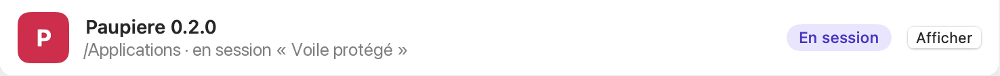
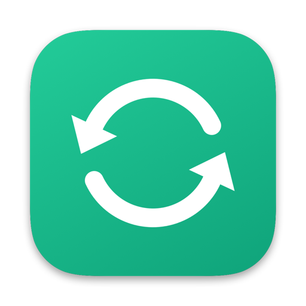
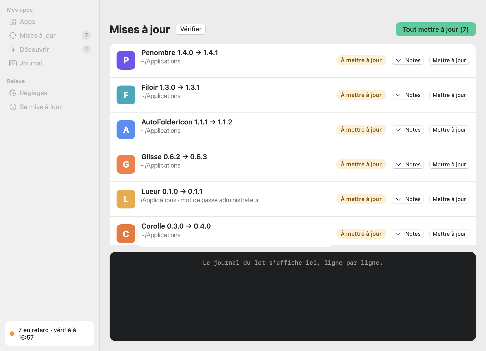
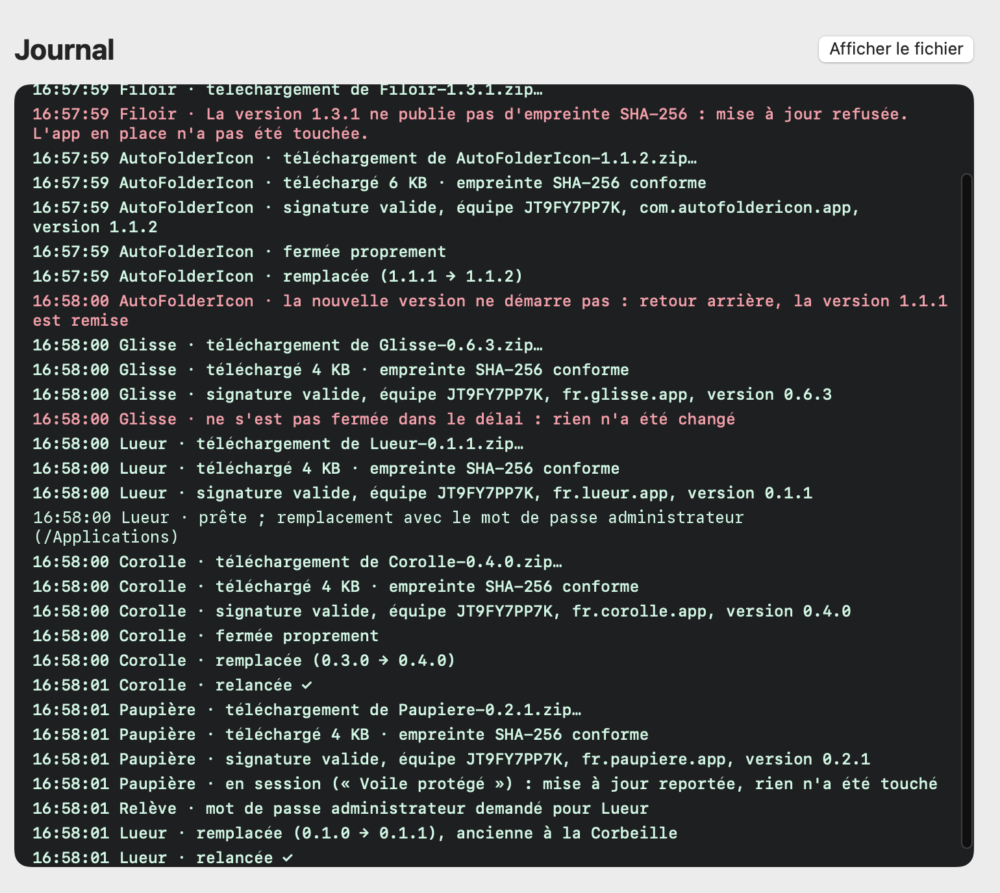
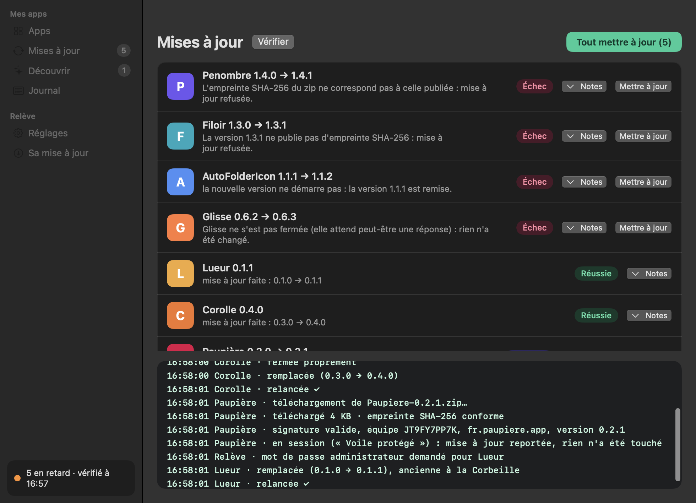
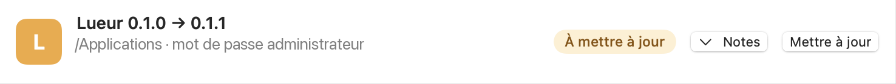
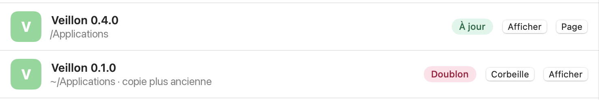
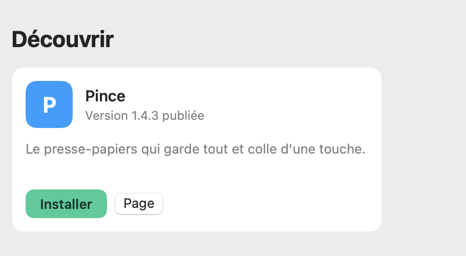

Jamais en pleine session
Une app qui garde le Mac éveillé, comme Paupière, n'est pas interrompue : sa mise à jour attend la vérification suivante.


Relève vit dans la barre des menus, repère les apps en retard et les remplace toutes, sans jamais casser l'ancienne version.
Gratuit, sans compte · version 0.1.0 · macOS 14 ou plus, Mac à puce Apple

Barre des menus et notification : illustration. Fenêtre : capture de la vraie app sur un Mac d'essai fictif, dont les icônes sont remplacées par des initiales.
Avec plusieurs Mac, personne ne se souvient de qui a quelle version de quoi.
Illustration.
Relève le voit sur chaque Mac, et le règle d'un clic.
Un bouton vert dans l'onglet Mises à jour : Relève fait le tour des apps en retard, une par une, et note chaque étape dans le Journal.

Cinq contrôles avant, pendant et après le remplacement. Un échec sur une app n'arrête pas les autres.
L'empreinte SHA-256 du téléchargement doit être celle qui a été publiée.
Même équipe de développement, signature valide, version annoncée.
L'app est fermée comme vous le feriez, jamais de force.
L'ancienne est mise de côté, la nouvelle prend sa place.
Si la nouvelle ne démarre pas, l'ancienne revient.
Un refus, et rien n'a été touché : l'app en place reste telle quelle.

Une app qui garde le Mac éveillé, comme Paupière, n'est pas interrompue : sa mise à jour attend la vérification suivante.

Les apps installées pour tous les utilisateurs demandent le mot de passe une fois pour tout le lot, pas une fois par app.

Deux copies de la même app ? Relève suit la plus récente et propose la plus ancienne à la Corbeille, d'un clic.

Captures de la vraie app, Mac d'essai fictif (chemins remplacés par /Applications ou ~/Applications ; icônes remplacées par des initiales).
L'onglet Découvrir liste les apps de la collection pas encore sur ce Mac. « Installer » les pose avec les mêmes contrôles ; « Page » ouvre leur présentation.

Relève regarde au lancement, puis régulièrement. Le bouton Vérifier force un tour tout de suite.
Barre latérale › Mises à jourLe bouton vert, en haut à droite. Chaque app est contrôlée, remplacée, relancée.
Mises à jour › Tout mettre à jourLes apps de la collection que ce Mac n'a pas encore, installables d'un clic.
Barre latérale › DécouvrirGratuit, sans compte, sans télémétrie.
Double-clic sur Releve.dmg dans Téléchargements.
Déposez Relève sur le dossier Applications.
Au premier lancement : clic droit sur Relève › Ouvrir. Une seule fois.
Relève est signée, mais pas vérifiée par Apple (cette vérification, la notarisation, demande un compte développeur payant) : macOS demande donc une confirmation la première fois.
Dans Terminal (⌘ Espace, « Terminal »), collez la commande. Elle télécharge Relève, contrôle l'empreinte et la signature, et lève le blocage de macOS sur Relève seulement. Le script se lit en entier : installer.sh.
La commande d’installation arrive avec la première release publique.
Première version, essayée sur un Mac d'essai avec de fausses apps : les captures de cette page en viennent. Pas de Mac App Store.